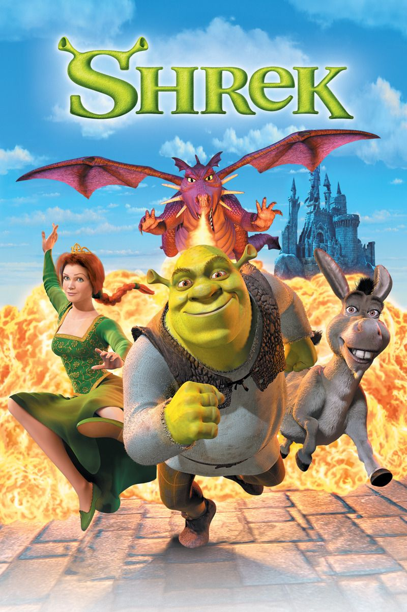

Shrek
Details
Who is Shrek
Shrek is a green ogre from the movie 'Shrek' with a Scottish accent. Shrek is the main character, along with other characters Donkey and Fiona.
- Name: Shrek
- Name Origin: From the German word Schreck, which means fight or terror.
- Gender: Male
- Race: Ogre, human(temporarily)
- Spouse: Fiona
- Children : Farkle, Fergus and Felicia
- Height: 6'7"
- Wight: 208lbs (94kg)
- Eye Colour: Brown
- Hair Colour: Bald (green)
- Skin colour: Green
- Occupation: Scaring Villagers
- Location: Swamp

Shrek's Childhood - Shrek the Musical
Shrek's birhtday is unknown much like alot of his childhood. In shrek the musical Shrek was born to an unnamed father and mother about thirty years prior to the first movie. He lived with his parents until his 7th birthday. Although they didn't want him to go, they had to follow the "ogre rules".

Shrek's life - Plot of Shrek
When a green ogre named Shrek discovers his swamp has been 'swamped' with all sorts of fairytale creatures by the scheming Lord Farquaad, Shrek sets out with a very loud donkey by his side to 'persuade' Farquaad to give Shrek his swamp back. Instead, a deal is made. Farquaad, who wants to become the King, sends Shrek to rescue Princess Fiona, who is awaiting her true love in a tower guarded by a fire-breathing dragon. But once they head back with Fiona, it starts to become apparent that not only does Shrek, an ugly ogre, begin to fall in love with the lovely princess, but Fiona is also hiding a huge secret.

Shrek's life - Plot of Shrek 2
Shrek has rescued Princess Fiona, got married, and now is time to meet the parents. Shrek, Fiona, and Donkey set off to Far, Far Away to meet Fiona's mother and father. But not everyone is happy. Shrek and the King find it hard to get along, and there's tension in the marriage. It's not just the family who are unhappy. Prince Charming returns from a failed attempt at rescuing Fiona, and works alongside his mother, the Fairy Godmother, to try and find a way to get Shrek away from Fiona.

Shrek's life - Plot of Shrek the Third
When his father-in-law suddenly croaks, Shrek is left with the duty and responsibilities of running Far Far Away as the new king. But Shrek doesn't feel like he is the right guy for the job. The only solution is having someone else take the throne. So Shrek, along with Donkey and Puss in Boots, goes on a search for a rebellious Arthur who is the only remaining heir aside from Shrek himself. Little does he know is that his old enemy, the ruthless Prince Charming, is plotting to take over the kingdom with an army of fairy-tale villains at his command. Only Fiona and a posse of princesses are left to defend the kingdom from Charming's wrath.

Shrek's life - Plot of Shrek Forever After
The once hideous ogre Shrek is now living a good life with wife Fiona and his three children. But he soon has a meltdown in front of them and his friends during his kids' birthday party. He suddenly wants to be a real ogre like he was before he ever met Fiona. So he turns to devious deal maker Rumplestiltskin for help. At first, Shrek lives the life he once lost and everything is good. But he soon finds out that he has been set up by Rumplestiltskin, who now rules the land with an iron fist. Teaming with friends Donkey, Fiona and Puss in Boots, Shrek is in for the fight of his life as he tries to get his life back before time runs out.